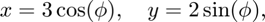
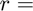

Графики функций от двух переменных: на сетке и без
Contents
Анонимная функция
В MATLAB можно создать "анонимную функцию", см. Anonimous Function
Это функция, которая не сохраняется в отдельном файле .m, а сохраняется в переменной с типом function_handle. Она может принимать множество аргуметов и возвращать несколько значений.
Тело такой функции должно быть одной выполняемой командой (вычилением).
Например, создадим ананоимную функцию, которая вычисляет в заданной точке.
f = @(x) sin(x.^2); [f(0), f(sqrt(pi/2)), f(2)]
ans =
0 1.0000 -0.7568
Теперь создадим равномерную сетку на отрезке и построим график функции f.
x = linspace(-sqrt(4*pi), sqrt(4*pi), 31); figure(1); plot(x, f(x)); legend('sin(x^2)'); xlabel('x');
Как мы видим, результат сильно зависит от плотности сетки. Чем больше точек мы задаем в параметре linspace, тем более гладкий график.
Функция, зависящая от параметра
Пусть необходимо изобразить эллипс
Для начала параметризуем его

и изобразим отдельно зависимость x и y от параметра .
phi = linspace(0, 2*pi); x = 3 * cos(phi); y = 2 * sin(phi); figure(2); plot(phi, x); hold on; plot(phi, y); hold off; legend('x(\phi) = 3 cos(\phi)', 'y(\phi) = 2 sin(\phi)'); xlabel('\phi');
По отдельности эти две кривиые ничего не значят...
Но если нарисовать эти две кривые вмсете, они показывают наш эллипс.
figure(3); plot(x, y); axis([-3.5 3.5 -2.5 2.5]); axis('equal'); % Одинаковый масштаб по обеим осям xlabel('x'); ylabel('y'); title('x^2/9 + y^2/4 = 1');
Аналогичный способ через анаонимные функции и функцию fplot.
xt = @(t) 3*cos(t); yt = @(t) 2*sin(t); figure(4); fplot(xt,yt, [0 2*pi]); xlabel('x'); ylabel('y'); axis([-3.5 3.5 -2.5 2.5]);
Рисуем функции без сетки
Нарисуем график функции
без использования сетки. Для этого воспользуемся функцией fplot, которая строит график адаптивынм методом, т.е. сама подбирает точность сетки в зависимости от текущего масштаба.
f = @(x) exp(-abs(x)); figure(5); fplot(f); ylim([0, 1]) legend('e^{-|x|}'); xlabel('x');

Функция двух переменных на сетке
Чтобы создать сетку на плоскости, можно использовать meshgrid. Первый аргумент - вектор значений по X, второй аргумент - по Y.
[x, y] = meshgrid(1:3, 4:6);
z = x + 1i*y; disp(z);
1.0000 + 4.0000i 2.0000 + 4.0000i 3.0000 + 4.0000i 1.0000 + 5.0000i 2.0000 + 5.0000i 3.0000 + 5.0000i 1.0000 + 6.0000i 2.0000 + 6.0000i 3.0000 + 6.0000i
Изобразим изолинии функции, например, с помощью contour.
f = y - x; figure(6); contour(x, y, f);
Чтобы приукрасить наш график, заполним пустоты (другой тип функционала изолиний) схожей функцией contourf, нарисуем сами изолинии, наример, крсаной пунктирной линией '--r', сделаем их толще 'LineWidth', и добавим к ним подпись 'ShowText'.
contourf(x, y, f, '--r', 'ShowText', 'on', 'LineWidth', 1.6); xlabel('x'); ylabel('y'); title('f(x, y) = y - x');

Пример для более сложной функции
Здесь мы нарисуем только те линии уровня, которые отвечают значениям 0, 2, 4 и 6.
[x, y] = meshgrid(linspace(-2*pi, 2*pi, 101), linspace(-2*pi, 2*pi, 101)); f = x.*sin(y) - y.*cos(x); figure(7); contour(x, y, f, [0 2 4 6], 'ShowText', 'on'); xlabel('x'); ylabel('y'); title('$f(x, y) = x \sin(y) - y \cos(x)$', 'Interpreter', 'latex');
Создание комплексной сетки
Чтобы создать сетку на комплексной плоскости, создадим сначала сетку из вещественных и мнимых компонент:
x = linspace(-2, 2, 3); y = linspace(-1.5, 1.5, 3); [x, y] = meshgrid(x, y)
А теперь создадим из этого комплексные числа
z = complex(x, y)
x =
-2 0 2
-2 0 2
-2 0 2
y =
-1.5000 -1.5000 -1.5000
0 0 0
1.5000 1.5000 1.5000
z =
-2.0000 - 1.5000i 0.0000 - 1.5000i 2.0000 - 1.5000i
-2.0000 + 0.0000i 0.0000 + 0.0000i 2.0000 + 0.0000i
-2.0000 + 1.5000i 0.0000 + 1.5000i 2.0000 + 1.5000i
Теперь можно проверить условие принадлежности комплексных чисел к области (например, окружность с центром в нуле и радиусом 1):
x = linspace(-2, 2, 101); y = linspace(-1.5, 1.5, 101); [x, y] = meshgrid(x, y); z = complex(x, y); ind_incircle = abs(z) < 1;
Нарисуем те числа, которые удовлетворяют данному условию:
z_incircle = z(ind_incircle);
figure(1)
plot(z_incircle, '.r')
Изображение окружности на комплексной плоскости
Изобразим границу области . Любое комплексное число можно представить в виде
где  abs(z) - модуль комплексного числа; = angle(z) угол. Таким образом, модуль границы есть единица, а угол изменяется от нуля до 2*pi.
Один из примеров как можно нарисовать функцию (function handle) , заданную параметрически, т.е. , см. fplot
figure(1) hold on; fplot(@(phi) cos(phi), @(phi) sin(phi), [0, 2*pi], ... LineWidth = 1.5, Color = 'red') hold off; axis equal xlabel('Real(z)'); ylabel('Imag(z)'); legend('$z$', '$|z| = 1$', Interpreter = 'latex', FontSize = 14)
Функция двух переменных без сетки
Данный пример оставлен для самостоятельного изучения. Смотри документацию fcontour.
f = @(x,y) 3*(1-x).^2.*exp(-(x.^2)-(y+1).^2)... - 10*(x/5 - x.^3 - y.^5).*exp(-x.^2-y.^2)... - 1/3*exp(-(x+1).^2 - y.^2); figure(8); fcontour(f, [-3 3], ... '-k', 'MeshDensity', 171, 'Fill', 1, 'LevelStep', 1); ylabel('$y$', 'Interpreter', 'latex', 'FontSize', 16); xl = xlabel('$x$'); xl.Interpreter = 'latex'; xl.FontSize = 16; title({'$f(x, y) = 3(1-x)^2 \, e^{-(x^2)-(y+1)^2} -$', ... '$- 10(\frac{x}{5} - x^3 - y^5) \, e^{-x^2-y^2} - \frac{1}{3} \, e^{-(x+1)^2 - y^2}$'},... 'Interpreter', 'latex', 'FontSize', 14);